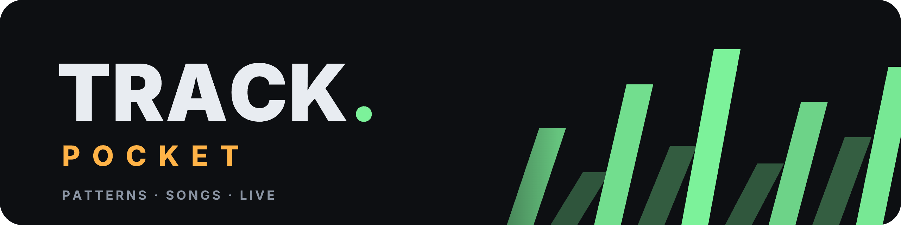
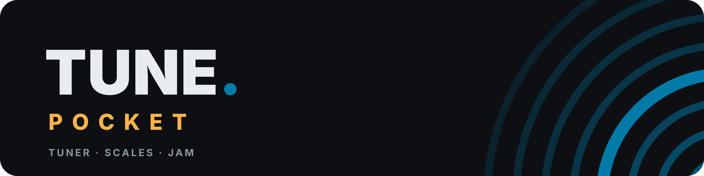
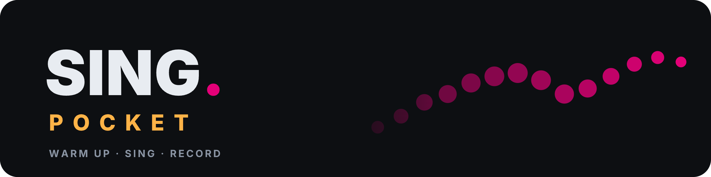

POCKET APPS
Test builds: features still being tried, not released. They keep their own data, so your songs and settings in the real apps are not touched. Things may break; tell me what does.
Three small, free music apps. They run in your browser, install on your phone or computer like an app, work offline, and keep everything on your device.

A pocket tracker: patterns, sampler, mixer, live effects and a song generator.

A tuner, note detector, scale finder, jam band, metronome and looper.

A vocal coach: warm-ups, song practice, a pitch test, takes, autotune and a singing game.